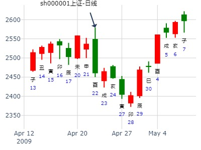

主帖标题: 002027七喜控股下本周涨跌
生：没填 年 性别：男 占事：002027七喜控股本周涨跌
排卦：元亨利贞网六爻在线排盘系统 http://www.china95.net
公历起卦时间：2016年1月18日15时3分 (电脑自动)
干支：乙未年 己丑月 己亥日 壬申时 （日空：辰巳）
神煞：驿马－巳 桃花－子 日禄－午 贵人－子，申
乾宫：乾为天 (六冲) 乾宫：天风姤
六神 伏神 本 卦 变 卦
勾陈 父母壬戌土 ▅▅▅▅▅ 世 父母壬戌土 ▅▅▅▅▅
朱雀 兄弟壬申金 ▅▅▅▅▅ 兄弟壬申金 ▅▅▅▅▅
青龙 官鬼壬午火 ▅▅▅▅▅ 官鬼壬午火 ▅▅▅▅▅ 应
玄武 父母甲辰土 ▅▅▅▅▅ 应 兄弟辛酉金 ▅▅▅▅▅
白虎 妻财甲寅木 ▅▅▅▅▅ 子孙辛亥水 ▅▅▅▅▅
腾蛇 子孙甲子水 ▅▅▅▅▅ ○→ 父母辛丑土 ▅▅ ▅▅ 世
主帖标题: 近期上涨何日短线回调
公历起卦时间：2020年1月3日8时9分 (电脑自动)
干支：己亥年 丙子月 乙巳日 庚辰时 （日空：寅卯）
神煞：驿马－亥 桃花－午 日禄－卯 贵人－子，申
乾宫：乾为天 (六冲) 乾宫：天风姤
六神 伏神 本 卦 变 卦
玄武 父母壬戌土 ▅▅▅▅▅ 世 父母壬戌土 ▅▅▅▅▅
白虎 兄弟壬申金 ▅▅▅▅▅ 兄弟壬申金 ▅▅▅▅▅
腾蛇 官鬼壬午火 ▅▅▅▅▅ 官鬼壬午火 ▅▅▅▅▅ 应
勾陈 父母甲辰土 ▅▅▅▅▅ 应 兄弟辛酉金 ▅▅▅▅▅
朱雀 妻财甲寅木 ▅▅▅▅▅ 子孙辛亥水 ▅▅▅▅▅
青龙 子孙甲子水 ▅▅▅▅▅ ○→ 父母辛丑土 ▅▅ ▅▅ 世
下周1始，但仅仅是短期，2日或一周，余继续上
主帖标题: 002634棒杰股份股本周涨跌
手摇卦
公历时间：2020年1月13日6时58分 农历时间：己亥年 十二月十九日卯时
干 支：己亥年 丁丑月 乙卯日 己卯时
旬 空：辰巳 申酉 子丑 申酉
神 煞：驿马─巳 桃花─子 日禄─卯 贵人─子，申
乾宫：乾为天（六冲） 乾宫：天风姤
玄武 ▄▄▄▄▄ 父母壬戌土 世 ▄▄▄▄▄ 父母壬戌土
白虎 ▄▄▄▄▄ 兄弟壬申金 ▄▄▄▄▄ 兄弟壬申金
螣蛇 ▄▄▄▄▄ 官鬼壬午火 ▄▄▄▄▄ 官鬼壬午火 应
勾陈 ▄▄▄▄▄ 父母甲辰土 应 ▄▄▄▄▄ 兄弟辛酉金
朱雀 ▄▄▄▄▄ 妻财甲寅木 ▄▄▄▄▄ 子孙辛亥水
青龙 ▄▄▄▄▄ 子孙甲子水 ○ ▄▄ ▄▄ 父母辛丑土 世
中科金财己亥年走势2019年
时间: 2019-02-23 14时14分
干支: 己亥年丙寅月辛卯日 (旬空: 午未 )
乾为天 天风姤
六神 伏神 本 卦 变 卦
腾蛇 ▅▅▅▅▅ 父母戌土 世 ▅▅▅▅▅ 父母戌土
勾陈 ▅▅▅▅▅ 兄弟申金 ▅▅▅▅▅ 兄弟申金
朱雀 ▅▅▅▅▅ 官鬼午火 ▅▅▅▅▅ 官鬼午火 应
青龙 ▅▅▅▅▅ 父母辰土 应 ▅▅▅▅▅ 兄弟酉金
玄武 ▅▅▅▅▅ 妻财寅木 ▅▅▅▅▅ 子孙亥水
白虎 ▅▅▅▅▅ 子孙子水 Ｏ→ ▅▅ ▅▅ 父母丑土 世
占事：3 月50ETF如何走？
公历起卦时间：2019年2月25日16时12分 (电脑自动)
干支：己亥年 丙寅月 癸巳日 庚申时 （日空：午未）
神煞：驿马－亥 桃花－午 日禄－子 贵人－卯，巳
乾宫：乾为天 (六冲) 乾宫：天风姤
六神 伏神 本 卦 变 卦
白虎 父母壬戌土 ▅▅▅▅▅ 世 父母壬戌土 ▅▅▅▅▅
腾蛇 兄弟壬申金 ▅▅▅▅▅ 兄弟壬申金 ▅▅▅▅▅
勾陈 官鬼壬午火 ▅▅▅▅▅ 官鬼壬午火 ▅▅▅▅▅ 应
朱雀 父母甲辰土 ▅▅▅▅▅ 应 兄弟辛酉金 ▅▅▅▅▅
青龙 妻财甲寅木 ▅▅▅▅▅ 子孙辛亥水 ▅▅▅▅▅
玄武 子孙甲子水 ▅▅▅▅▅ ○→ 父母辛丑土 ▅▅ ▅▅ 世
今日上证
时间: 2025-02-10 8时49分
干支: 乙巳年戊寅月庚戌日 (旬空: 寅卯 )
乾为天 天风姤
六神 伏神 本 卦 变 卦
腾蛇 ▅▅▅▅▅ 父母戌土 世 ▅▅▅▅▅ 父母戌土
勾陈 ▅▅▅▅▅ 兄弟申金 ▅▅▅▅▅ 兄弟申金
朱雀 ▅▅▅▅▅ 官鬼午火 ▅▅▅▅▅ 官鬼午火 应
青龙 ▅▅▅▅▅ 父母辰土 应 ▅▅▅▅▅ 兄弟酉金
玄武 ▅▅▅▅▅ 妻财寅木 ▅▅▅▅▅ 子孙亥水
白虎 ▅▅▅▅▅ 子孙子水 Ｏ→ ▅▅ ▅▅ 父母丑土 世
占事: 3月5日己酉日601628中国人寿与上日收盘对比涨跌起卦方式：手动摇卦 周易天地www.64gua.com六爻线上排盘系统
公历时间：2009年3月4日22时31分 农历时间：己丑年 二月初八日亥时
干支：己丑年 丙寅月 戊申日 癸亥时 旬空：午未 戌亥 寅卯 子丑
神煞：驿马─寅 桃花─酉 日禄─巳 贵人─丑，未
乾宫：乾为天（六冲） 乾宫：天风姤
六神 【本 卦】 【变 卦】
朱雀 ▄▄▄▄▄ 父母壬戌土 世 ▄▄▄▄▄ 父母壬戌土
青龙 ▄▄▄▄▄ 兄弟壬申金 ▄▄▄▄▄ 兄弟壬申金
玄武 ▄▄▄▄▄ 官鬼壬午火 ▄▄▄▄▄ 官鬼壬午火 应
白虎 ▄▄▄▄▄ 父母甲辰土 应 ▄▄▄▄▄ 兄弟辛酉金
螣蛇 ▄▄▄▄▄ 妻财甲寅木 ▄▄▄▄▄ 子孙辛亥水
勾陈 ▄▄▄▄▄ 子孙甲子水 O-> ▄▄ ▄▄ 父母辛丑土 世
财日！子动化父克！
大涨！
主帖标题: 六爻预测14日大盘行情
公历起卦时间：2011年3月14日9时30分 (手工指定)
干支：辛卯年 辛卯月 戊辰日 丁巳时 （日空：戌亥）
乾宫：乾为天 (六冲) 乾宫：天风姤
朱雀 父母壬戌土 ▅▅▅▅▅ 世 父母壬戌土 ▅▅▅▅▅
青龙 兄弟壬申金 ▅▅▅▅▅ 兄弟壬申金 ▅▅▅▅▅
玄武 官鬼壬午火 ▅▅▅▅▅ 官鬼壬午火 ▅▅▅▅▅ 应
白虎 父母甲辰土 ▅▅▅▅▅ 应 兄弟辛酉金 ▅▅▅▅▅
腾蛇 妻财甲寅木 ▅▅▅▅▅ 子孙辛亥水 ▅▅▅▅▅
勾陈 子孙甲子水 ▅▅▅▅▅ ○→ 父母辛丑土 ▅▅ ▅▅ 世
两个卦象先吉后凶，高位拉升，及时卖出，盛阳遇阴，遭遇空头，先升后跌。子孙化父母：化回头克制，财源枯竭，多方受克人气难聚，必折本，建议：休息！个人观点！

占事：3月21日大盘涨跌 股牧
起卦方式：手动摇卦 易经股市论坛 www.yijingstock.com
公历时间：2016年3月18日17时10分
干 支：丙申年 辛卯月 己亥日 癸酉时
旬 空：辰巳 午未 (辰巳) 戌亥
乾宫：乾为天（六冲） 乾宫：天风姤
六神 【本 卦】 【变 卦】
勾陈 ▄▄▄▄▄ 父母壬戌土 世 ▄▄▄▄▄ 父母壬戌土
朱雀 ▄▄▄▄▄ 兄弟壬申金 ▄▄▄▄▄ 兄弟壬申金
青龙 ▄▄▄▄▄ 官鬼壬午火 ▄▄▄▄▄ 官鬼壬午火 应
玄武 ▄▄▄▄▄ 父母甲辰土 应 ▄▄▄▄▄ 兄弟辛酉金
白虎 ▄▄▄▄▄ 妻财甲寅木 ▄▄▄▄▄ 子孙辛亥水
螣蛇 ▄▄▄▄▄ 子孙甲子水 O ▄▄ ▄▄ 父母辛丑土 世
主帖标题: 理论与实践交融，终见八卦六爻精妙——兰州银行
测兰州银行后市
公历起卦时间：2022年3月14日14时54分 (按农历时间起卦)
干支：壬寅年 癸卯月 丙寅日 乙未时 （日空：戌亥）
神煞：驿马－申 桃花－卯 日禄－巳 贵人－酉，亥
乾宫：乾为天 (六冲) 乾宫：天风姤
青龙 父母壬戌土 ▅▅▅▅▅ 世 父母壬戌土 ▅▅▅▅▅
玄武 兄弟壬申金 ▅▅▅▅▅ 兄弟壬申金 ▅▅▅▅▅
白虎 官鬼壬午火 ▅▅▅▅▅ 官鬼壬午火 ▅▅▅▅▅ 应
螣蛇 父母甲辰土 ▅▅▅▅▅ 应 兄弟辛酉金 ▅▅▅▅▅
勾陈 妻财甲寅木 ▅▅▅▅▅ 子孙辛亥水 ▅▅▅▅▅
朱雀 子孙甲子水 ▅▅▅▅▅ ○→ 父母辛丑土 ▅▅ ▅▅ 世
戌空待用，上六亢龙有悔，辰冲戌时申子辰有利
介绍另一种起卦方法-------预测一周期区间的涨跌趋势[1]首先划分好周期 参看上大盘附图
[2]以该周期段划k线，以收阳k为阳爻，收阴为阴k。
[3]六周期起一正k线卦，以最后一天的收盘取动爻。
例如：大盘11-13日至04-07日 收盘 1774.55
k线组合为乾 动取1爻
起卦方式：手工指定 www.stock99.com线上排盘系统
公历时间：2004年4月7日13时50分
农历时间：甲申年闰二月十八未时
干支：甲申年 戊辰月 丙辰日 乙未时 (旬空：子丑) 测04-09后一个周期行情
神煞：驿马—寅 桃花—酉 日禄—巳 贵人—酉，亥 [ 16日一周期]
乾宫：乾为天（六冲） 乾宫：天风姤
六神 【本 卦】 【变 卦】
青龙 ▅▅▅▅▅ 父母壬戌土 世 ▅▅▅▅▅ 父母壬戌土
玄武 ▅▅▅▅▅ 兄弟壬申金 ▅▅▅▅▅ 兄弟壬申金
白虎 ▅▅▅▅▅ 官鬼壬午火 ▅▅▅▅▅ 官鬼壬午火 应
螣蛇 ▅▅▅▅▅ 父母甲辰土 应 ▅▅▅▅▅ 兄弟辛酉金
勾陈 ▅▅▅▅▅ 妻财甲寅木 ▅▅▅▅▅ 子孙辛亥水
朱雀 ▅▅▅▅▅ 子孙甲子水 ○→ ▅▅ ▅▅ 父母辛丑土 世
断：后周期为下跌[04-09----04-29]
测04-30后一周期行情 收盘04-29日 1579.45
起卦方式：手工指定 www.stock99.com线上排盘系统
公历时间：2004年4月29日13时57分
农历时间：甲申年三月十一未时
干支：甲申年 戊辰月 戊寅日 己未时 (旬空：申酉)
神煞：驿马—申 桃花—卯 日禄—巳 贵人—丑，未
乾宫：天风姤 乾宫：乾为天（六冲）
六神 伏 神 【本 卦】 【变 卦】
朱雀 ▅▅▅▅▅ 父母壬戌土 ▅▅▅▅▅ 父母壬戌土 世
青龙 ▅▅▅▅▅ 兄弟壬申金 ▅▅▅▅▅ 兄弟壬申金
玄武 ▅▅▅▅▅ 官鬼壬午火 应 ▅▅▅▅▅ 官鬼壬午火
白虎 ▅▅▅▅▅ 兄弟辛酉金 ▅▅▅▅▅ 父母甲辰土 应
螣蛇 妻财甲寅木 ▅▅▅▅▅ 子孙辛亥水 ▅▅▅▅▅ 妻财甲寅木
勾陈 ▅▅ ▅▅ 父母辛丑土 世×→ ▅▅▅▅▅ 子孙甲子水
断：测日兄暗动[当日下跌]生助亥水，空反多象，
巳月官临月制兄止跌之意，飞神月破伏神易出，有反弹；
父持世，辛苦可得财，水/木处休囚之地，反弹有限；
总体为本周期[16天内]为震荡行情。
关键日：
动变合逢冲日
仅供大家参考
主帖标题: 600489中金黄金
占事: 中金黄金当天下午行情 起卦方式：手工指定
公历时间：2009年4月22日12时3分
干支：己丑年 戊辰月 丁酉日 丙午时 旬空：午未 戌亥 辰巳 寅卯
神煞：驿马─亥 桃花─午 日禄─午 贵人─酉，亥
乾宫：乾为天（六冲） 乾宫：天风姤
青龙 ▄▄▄▄▄ 父母壬戌土 世 ▄▄▄▄▄ 父母壬戌土
玄武 ▄▄▄▄▄ 兄弟壬申金 ▄▄▄▄▄ 兄弟壬申金
白虎 ▄▄▄▄▄ 官鬼壬午火 ▄▄▄▄▄ 官鬼壬午火 应
螣蛇 ▄▄▄▄▄ 父母甲辰土 应 ▄▄▄▄▄ 兄弟辛酉金
勾陈 ▄▄▄▄▄ 妻财甲寅木 ▄▄▄▄▄ 子孙辛亥水
朱雀 ▄▄▄▄▄ 子孙甲子水 O-> ▄▄ ▄▄ 父母辛丑土 世
市况:当天下午继续下跌.

乾之姤，子化父，子化丑。辰日大跌。2011年顶
2011.4.15－4.22，IF1105六日走势（ferrari铜钱）
排卦：元亨利贞网六爻在线排盘系统
公历起卦时间：2011年4月14日22时7分 (手工指定)
干支：辛卯年 壬辰月 己亥日 乙亥时 （日空：辰巳）
乾宫：乾为天 (六冲) 乾宫：天风姤
勾陈 父母壬戌土 ▅▅▅▅▅ 世 父母壬戌土 ▅▅▅▅▅
朱雀 兄弟壬申金 ▅▅▅▅▅ 兄弟壬申金 ▅▅▅▅▅
青龙 官鬼壬午火 ▅▅▅▅▅ 官鬼壬午火 ▅▅▅▅▅ 应
玄武 父母甲辰土 ▅▅▅▅▅ 应 兄弟辛酉金 ▅▅▅▅▅
白虎 妻财甲寅木 ▅▅▅▅▅ 子孙辛亥水 ▅▅▅▅▅
腾蛇 子孙甲子水 ▅▅▅▅▅ ○→ 父母辛丑土 ▅▅ ▅▅ 世
辰巳旬空有效期两天，4.15－4.18，下跌9点
辰巳填实后，寅卯空，妻财空，4.19－4.28，预测：下跌
子孙被父母丑土克住。 辰日大跌。

主帖标题: 11乾卦例集合
求测人：某人，男，庚午(1990年)，手摇卦(起卦方式)
占问事宜：要问的事情上证
公历：2020年4月12日13时4分，星期日。
干支：庚子年 庚辰月 乙酉日 癸未时 (卦身：巳)
主变卦 乾为天(乾宫) 之 天风姤(乾宫) [空亡:午、未]
玄武 ▅▅▅▅▅ 父母壬戌土 世 ▅▅▅▅▅ 父母壬戌土
白虎 ▅▅▅▅▅ 兄弟壬申金 ▅▅▅▅▅ 兄弟壬申金
螣蛇 ▅▅▅▅▅ 官鬼壬午火 ▅▅▅▅▅ 官鬼壬午火 应
勾陈 ▅▅▅▅▅ 父母甲辰土 应 ▅▅▅▅▅ 兄弟辛酉金
朱雀 ▅▅▅▅▅ 妻财甲寅木 ▅▅▅▅▅ 子孙辛亥水
青龙 ▅▅▅▅▅○子孙甲子水 ▅▅ ▅▅ 父母辛丑土 世
结果周升，，戍子跌亥丑寅升
主帖标题: [原创]每日预测沪市大盘方向
公历时间：2009年5月13日9时30分 星期三
干支：己丑年 己巳月 戊午日 丁巳时 (旬空：子丑)
时间: 2009-05-13
干支: 己丑年己巳月戊午日 (旬空: 子丑 )
乾为天 天风姤
朱雀 ▅▅▅▅▅ 父母戌土 世 ▅▅▅▅▅ 父母戌土
青龙 ▅▅▅▅▅ 兄弟申金 ▅▅▅▅▅ 兄弟申金
玄武 ▅▅▅▅▅ 官鬼午火 ▅▅▅▅▅ 官鬼午火 应
白虎 ▅▅▅▅▅ 父母辰土 应 ▅▅▅▅▅ 兄弟酉金
腾蛇 ▅▅▅▅▅ 妻财寅木 ▅▅▅▅▅ 子孙亥水
勾陈 ▅▅▅▅▅ 子孙子水 Ｏ→ ▅▅ ▅▅ 父母丑土 世
主帖标题: [原创]每日预测沪市大盘方向
公历时间：2009年5月18日9时30分 星期一
干支：己丑年 己巳月 癸亥日 丁巳时 (旬空：子丑)
乾为天 天风姤
六神 伏神 本 卦 变 卦
白虎 ▅▅▅▅▅ 父母戌土 世 ▅▅▅▅▅ 父母戌土
腾蛇 ▅▅▅▅▅ 兄弟申金 ▅▅▅▅▅ 兄弟申金
勾陈 ▅▅▅▅▅ 官鬼午火 ▅▅▅▅▅ 官鬼午火 应
朱雀 ▅▅▅▅▅ 父母辰土 应 ▅▅▅▅▅ 兄弟酉金
青龙 ▅▅▅▅▅ 妻财寅木 ▅▅▅▅▅ 子孙亥水
玄武 ▅▅▅▅▅ 子孙子水 Ｏ→ ▅▅ ▅▅ 父母丑土 世

主帖标题: [原创]每日预测沪市大盘方向
公历时间：2009年5月22日9时30分 星期五
农历时间：己丑年四月廿八巳时
干支：己丑年 己巳月 丁卯日 乙巳时 (旬空：戌亥)
神煞：驿马—巳 桃花—子 日禄—午 贵人—酉，亥
乾宫：乾为天（六冲） 乾宫：天风姤
六神 【本 卦】 【变 卦】
青龙 ▅▅▅▅▅ 父母壬戌土 世 ▅▅▅▅▅ 父母壬戌土
玄武 ▅▅▅▅▅ 兄弟壬申金 ▅▅▅▅▅ 兄弟壬申金
白虎 ▅▅▅▅▅ 官鬼壬午火 ▅▅▅▅▅ 官鬼壬午火 应
螣蛇 ▅▅▅▅▅ 父母甲辰土 应 ▅▅▅▅▅ 兄弟辛酉金
勾陈 ▅▅▅▅▅ 妻财甲寅木 ▅▅▅▅▅ 子孙辛亥水
朱雀 ▅▅▅▅▅ 子孙甲子水 ○→ ▅▅ ▅▅ 父母辛丑土 世
盛阳遇阴,遭遇空头,先升后跌,建议休息!属于个人观点!
5月第1周近期大盘如何演变？
时间: 2015-05-06
干支: 乙未年辛巳月壬午日 (旬空: 申酉 )
乾为天 天风姤
六神 伏神 本 卦 变 卦
白虎 ▅▅▅▅▅ 父母戌土 世 ▅▅▅▅▅ 父母戌土
腾蛇 ▅▅▅▅▅ 兄弟申金 ▅▅▅▅▅ 兄弟申金
勾陈 ▅▅▅▅▅ 官鬼午火 ▅▅▅▅▅ 官鬼午火 应
朱雀 ▅▅▅▅▅ 父母辰土 应 ▅▅▅▅▅ 兄弟酉金
青龙 ▅▅▅▅▅ 妻财寅木 ▅▅▅▅▅ 子孙亥水
玄武 ▅▅▅▅▅ 子孙子水 Ｏ→ ▅▅ ▅▅ 父母丑土 世

乾之姤，照样大涨。子化父，子化丑。大涨。
大盘(7月1日)之行情涨跌，得：
起卦方式：报数起卦 (25,9) 动爻加时辰
公历时间：2009年6月30日15时3分
干支：己丑年 庚午月 丙午日 丙申时
旬空：午未 戌亥 寅卯 辰巳
神煞：驿马─申 桃花─卯 日禄─巳 贵人─酉，亥
乾宫：乾为天（六冲） 乾宫：天风姤
六神 【本 卦】 【变 卦】
青龙 ▄▄▄▄▄ 父母壬戌土 世 ▄▄▄▄▄ 父母壬戌土
玄武 ▄▄▄▄▄ 兄弟壬申金 ▄▄▄▄▄ 兄弟壬申金
白虎 ▄▄▄▄▄ 官鬼壬午火 ▄▄▄▄▄ 官鬼壬午火 应
螣蛇 ▄▄▄▄▄ 父母甲辰土 应 ▄▄▄▄▄ 兄弟辛酉金
勾陈 ▄▄▄▄▄ 妻财甲寅木 ▄▄▄▄▄ 子孙辛亥水
朱雀 ▄▄▄▄▄ 子孙甲子水 O-> ▄▄ ▄▄ 父母辛丑土 世
大涨。子丑合。未日冲绊解合，子孙放出，涨。。
子孙子水日破月破，反而阴极转阳。
（由此卦可看出，真正的日子，即次日的作用） 未日冲合绊出来。
主帖标题: 欢迎各位老师“对300491进行连续4周”预测
公历时间：2021年6月27日18时0分 农历时间：辛丑年 五月十八日酉时
干 支：辛丑年 甲午月 丙午日 丁酉时
旬 空：辰巳 辰巳 寅卯 辰巳
神 煞：驿马─申 桃花─卯 日禄─巳 贵人─酉，亥
乾宫：乾为天（六冲） 乾宫：天风姤
青龙 ▄▄▄▄▄ 父母壬戌土 世 ▄▄▄▄▄ 父母壬戌土
玄武 ▄▄▄▄▄ 兄弟壬申金 ▄▄▄▄▄ 兄弟壬申金
白虎 ▄▄▄▄▄ 官鬼壬午火 ▄▄▄▄▄ 官鬼壬午火 应
螣蛇 ▄▄▄▄▄ 父母甲辰土 应 ▄▄▄▄▄ 兄弟辛酉金
勾陈 ▄▄▄▄▄ 妻财甲寅木 ▄▄▄▄▄ 子孙辛亥水
朱雀 ▄▄▄▄▄ 子孙甲子水 ○ ▄▄ ▄▄ 父母辛丑土 世
主帖标题: 六爻预测1日大盘行情
公历起卦时间：2011年7月1日9时30分 (手工指定)
干支：辛卯年 甲午月 丁巳日 乙巳时 （日空：子丑）
神煞：驿马－亥 桃花－午 日禄－午 贵人－酉，亥
乾宫：乾为天 (六冲) 乾宫：天风姤
青龙 父母壬戌土 ▅▅▅▅▅ 世 父母壬戌土 ▅▅▅▅▅
玄武 兄弟壬申金 ▅▅▅▅▅ 兄弟壬申金 ▅▅▅▅▅
白虎 官鬼壬午火 ▅▅▅▅▅ 官鬼壬午火 ▅▅▅▅▅ 应
腾蛇 父母甲辰土 ▅▅▅▅▅ 应 兄弟辛酉金 ▅▅▅▅▅
勾陈 妻财甲寅木 ▅▅▅▅▅ 子孙辛亥水 ▅▅▅▅▅
朱雀 子孙甲子水 ▅▅▅▅▅ ○→ 父母辛丑土 ▅▅ ▅▅ 世
盛阳遇阴，遭遇空头，先升后跌。子孙化父母：多头化回头克制，财源枯源，多方受人气难聚，必折本。建议：休息！
主帖标题: 六爻预测6日大盘行情
公历起卦时间：2011年7月6日9时30分 (手工指定)
干支：辛卯年 甲午月 壬戌日 乙巳时 （日空：子丑）
神煞：驿马－申 桃花－卯 日禄－亥 贵人－卯，巳
乾宫：乾为天 (六冲) 乾宫：天风姤
六神 伏神 本 卦 变 卦
白虎 父母壬戌土 ▅▅▅▅▅ 世 父母壬戌土 ▅▅▅▅▅
腾蛇 兄弟壬申金 ▅▅▅▅▅ 兄弟壬申金 ▅▅▅▅▅
勾陈 官鬼壬午火 ▅▅▅▅▅ 官鬼壬午火 ▅▅▅▅▅ 应
朱雀 父母甲辰土 ▅▅▅▅▅ 应 兄弟辛酉金 ▅▅▅▅▅
青龙 妻财甲寅木 ▅▅▅▅▅ 子孙辛亥水 ▅▅▅▅▅
玄武 子孙甲子水 ▅▅▅▅▅ ○→ 父母辛丑土 ▅▅ ▅▅ 世
两个卦象先吉后凶，盛阳遇阴，遭遇空头，先升后跌。日临消息，下跌的概率大！个人观点！
主帖标题: 9-27沪市走势
http://blog.sina.com.cn/s/blog_489e735b0100liwi.html
1.卜卦显示：乾，阳刚，多头强势；姤，遇也，多空相遇，乾覆阴，多头战胜空头。今天股市应高开后，多空对决，多头获胜。
2.策略：观众
公历时间：2010年9月27日7时44分
干 支：庚寅年 乙酉月 庚辰日 庚辰时
旬 空：午未 午未 申酉 申酉
乾宫：乾为天（六冲） 乾宫：天风姤
六神 【本 卦】 【变 卦】
螣蛇 ▄▄▄▄▄ 父母壬戌土 世 ▄▄▄▄▄ 父母壬戌土
勾陈 ▄▄▄▄▄ 兄弟壬申金 ▄▄▄▄▄ 兄弟壬申金
朱雀 ▄▄▄▄▄ 官鬼壬午火 ▄▄▄▄▄ 官鬼壬午火 应
青龙 ▄▄▄▄▄ 父母甲辰土 应 ▄▄▄▄▄ 兄弟辛酉金
玄武 ▄▄▄▄▄ 妻财甲寅木 ▄▄▄▄▄ 子孙辛亥水
白虎 ▄▄▄▄▄ 子孙甲子水 O-> ▄▄ ▄▄ 父母辛丑土 世
主帖标题: 2020年9月7日-11日上证指数擂台赛第33场-D方（日测、周测)
公历起卦时间：2020年9月4日14时33分 (手工指定)
干支：庚子年 甲申月 庚戌日 癸未时 （日空：寅卯）
乾宫：乾为天 (六冲) 乾宫：天风姤
六神 伏神 本 卦 变 卦
螣蛇 父母壬戌土 ▅▅▅▅▅ 世 父母壬戌土 ▅▅▅▅▅
勾陈 兄弟壬申金 ▅▅▅▅▅ 兄弟壬申金 ▅▅▅▅▅
朱雀 官鬼壬午火 ▅▅▅▅▅ 官鬼壬午火 ▅▅▅▅▅ 应
青龙 父母甲辰土 ▅▅▅▅▅ 应 兄弟辛酉金 ▅▅▅▅▅
玄武 妻财甲寅木 ▅▅▅▅▅ 子孙辛亥水 ▅▅▅▅▅
白虎 子孙甲子水 ▅▅▅▅▅ ○→ 父母辛丑土 ▅▅ ▅▅ 世

丑日暴跌。父母值日，消息来临。（中印冲突开枪事件）
辰日继续墓子孙，跌。
卯日子水死于卯。
紫金矿业2021-9-13到930. 乾之姤。
时间: 2021-09-13 8时35分
干支: 辛丑年丁酉月甲子日 (旬空: 戌亥 )
乾为天 天风姤
六神 伏神 本 卦 变 卦
玄武 ▅▅▅▅▅ 父母戌土 世 ▅▅▅▅▅ 父母戌土
白虎 ▅▅▅▅▅ 兄弟申金 ▅▅▅▅▅ 兄弟申金
腾蛇 ▅▅▅▅▅ 官鬼午火 ▅▅▅▅▅ 官鬼午火 应
勾陈 ▅▅▅▅▅ 父母辰土 应 ▅▅▅▅▅ 兄弟酉金
朱雀 ▅▅▅▅▅ 妻财寅木 ▅▅▅▅▅ 子孙亥水
青龙 ▅▅▅▅▅ 子孙子水 Ｏ→ ▅▅ ▅▅ 父母丑土 世
东财到下周五持有-金玉堂自动卦
时间: 2024-10-11
干支: 甲辰年甲戌月戊申日 (旬空: 寅卯 )
乾为天 天风姤
六神 伏神 本 卦 变 卦
朱雀 ▅▅▅▅▅ 父母戌土 世 ▅▅▅▅▅ 父母戌土
青龙 ▅▅▅▅▅ 兄弟申金 ▅▅▅▅▅ 兄弟申金
玄武 ▅▅▅▅▅ 官鬼午火 ▅▅▅▅▅ 官鬼午火 应
白虎 ▅▅▅▅▅ 父母辰土 应 ▅▅▅▅▅ 兄弟酉金
腾蛇 ▅▅▅▅▅ 妻财寅木 ▅▅▅▅▅ 子孙亥水
勾陈 ▅▅▅▅▅ 子孙子水 Ｏ→ ▅▅ ▅▅ 父母丑土 世
主帖标题: 下周大盘指数
公历起卦时间：2020年11月20日14时14分
干支：庚子年 丁亥月 丁卯日 丁未时 （日空：戌亥）
乾宫：乾为天 (六冲) 乾宫：天风姤
六神 伏神 本 卦 变 卦
青龙 父母壬戌土 ▅▅▅▅▅ 世 父母壬戌土 ▅▅▅▅▅
玄武 兄弟壬申金 ▅▅▅▅▅ 兄弟壬申金 ▅▅▅▅▅
白虎 官鬼壬午火 ▅▅▅▅▅ 官鬼壬午火 ▅▅▅▅▅ 应
螣蛇 父母甲辰土 ▅▅▅▅▅ 应 兄弟辛酉金 ▅▅▅▅▅
勾陈 妻财甲寅木 ▅▅▅▅▅ 子孙辛亥水 ▅▅▅▅▅
朱雀 子孙甲子水 ▅▅▅▅▅ ○→ 父母辛丑土 ▅▅ ▅▅ 世

主帖标题: [原创]每日预测沪市大盘方向
公历时间：2009年12月21日9时30分 星期一
干支：己丑年 丙子月 庚子日 辛巳时 (旬空：辰巳)
神煞：驿马—寅 桃花—酉 日禄—申 贵人—寅，午
乾宫：乾为天（六冲） 乾宫：天风姤
六神 【本 卦】 【变 卦】
螣蛇 ▅▅▅▅▅ 父母壬戌土 世 ▅▅▅▅▅ 父母壬戌土
勾陈 ▅▅▅▅▅ 兄弟壬申金 ▅▅▅▅▅ 兄弟壬申金
朱雀 ▅▅▅▅▅ 官鬼壬午火 ▅▅▅▅▅ 官鬼壬午火 应
青龙 ▅▅▅▅▅ 父母甲辰土 应 ▅▅▅▅▅ 兄弟辛酉金
玄武 ▅▅▅▅▅ 妻财甲寅木 ▅▅▅▅▅ 子孙辛亥水
白虎 ▅▅▅▅▅ 子孙甲子水 ○→ ▅▅ ▅▅ 父母辛丑土 世
请“新标准110”版主指点一下600158中体产业在2011年12月26日-12月30日走势
公历起卦时间：2011年12月25日11时19分 (手工指定)
干支：辛卯年 庚子月 甲寅日 庚午时 （日空：子丑）
神煞：驿马－申 桃花－卯 日禄－寅 贵人－丑，未
乾宫：乾为天 (六冲) 乾宫：天风姤
六神 伏神 本 卦 变 卦
玄武 父母壬戌土 ▅▅▅▅▅ 世 父母壬戌土 ▅▅▅▅▅
白虎 兄弟壬申金 ▅▅▅▅▅ 兄弟壬申金 ▅▅▅▅▅
腾蛇 官鬼壬午火 ▅▅▅▅▅ 官鬼壬午火 ▅▅▅▅▅ 应
勾陈 父母甲辰土 ▅▅▅▅▅ 应 兄弟辛酉金 ▅▅▅▅▅
朱雀 妻财甲寅木 ▅▅▅▅▅ 子孙辛亥水 ▅▅▅▅▅
青龙 子孙甲子水 ▅▅▅▅▅ ○→ 父母辛丑土 ▅▅ ▅▅ 世
主帖标题: 2021年第50周 12月6至12月10日个股300491和600031预测汇总
2021年第50周 12月6至12月10日个股600031预测
公历时间：2021年12月5日16时2分 农历时间：辛丑年 十一月初二日申时
干 支：辛丑年 己亥月 丁亥日 戊申时
旬 空：辰巳 辰巳 午未 寅卯
乾宫：乾为天（六冲） 乾宫：天风姤
青龙 ▄▄▄▄▄ 父母壬戌土 世 ▄▄▄▄▄ 父母壬戌土
玄武 ▄▄▄▄▄ 兄弟壬申金 ▄▄▄▄▄ 兄弟壬申金
白虎 ▄▄▄▄▄ 官鬼壬午火 ▄▄▄▄▄ 官鬼壬午火 应
螣蛇 ▄▄▄▄▄ 父母甲辰土 应 ▄▄▄▄▄ 兄弟辛酉金
勾陈 ▄▄▄▄▄ 妻财甲寅木 ▄▄▄▄▄ 子孙辛亥水
朱雀 ▄▄▄▄▄ 子孙甲子水 ○ ▄▄ ▄▄ 父母辛丑土 世
周涨，，，一五跌，二三四涨，，，，，跌，涨，涨，涨，跌，，，，周涨
主帖标题: 测申日大盘
公历起卦时间：2022年12月20日13时53分 (按农历时间起卦)
干支：壬寅年 壬子月 丁未日 丁未时 （日空：寅卯）
乾宫：乾为天 (六冲) 乾宫：天风姤
六神 伏神 本 卦 变 卦
青龙 父母壬戌土 ▅▅▅▅▅ 世 父母壬戌土 ▅▅▅▅▅
玄武 兄弟壬申金 ▅▅▅▅▅ 兄弟壬申金 ▅▅▅▅▅
白虎 官鬼壬午火 ▅▅▅▅▅ 官鬼壬午火 ▅▅▅▅▅ 应
螣蛇 父母甲辰土 ▅▅▅▅▅ 应 兄弟辛酉金 ▅▅▅▅▅
勾陈 妻财甲寅木 ▅▅▅▅▅ 子孙辛亥水 ▅▅▅▅▅
朱雀 子孙甲子水 ▅▅▅▅▅ ○→ 父母辛丑土 ▅▅ ▅▅ 世
同样，多方动，但化散。妻财暗动。明天有个拉的过程。